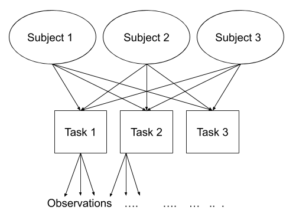

Random Effect Structures
Preliminaries
Create a new R Script or RMarkdown document (whichever you prefer working with) and give it a title for this week.
Some extra background reading
Now that we’ve had a few weeks to get used to the syntax of lme4, we’re going to hide the solutions again until the end of the week.
Random effects
What are “Random Effects”?
A frequent cause of confusion when learning about multilevel models is the use of the term “random effect”. Does it refer to the the grouping variable, or to the effects that we allow to vary by-groups? The answer is really both. For example, in the model lmer(R_AGE ~ 1 + hrs_week + (1 + hrs_week | toy_type), data = toys_read), the “random effects” refers to the (1 + hrs_week | toy_type). We are specifying by-toy type random intercepts and by-toy type effects of hrs_week.
Should I fit a fixed effect: y ~ ... + group or random effect: y ~ ... + (1 | group)?
When specifying a random effects model, think about the data you have and how they fit in the following table:
| Criterion: | Repetition: If the experiment were repeated: |
Desired inference: The conclusions refer to: |
|---|---|---|
| Fixed effects | Same levels would be used | The levels used |
| Random effects | Different levels would be used | A population from which the levels used are just a (random) sample |
Sometimes, after simplifying the model, you find that there isn’t much variability in a specific random effect and, if it still leads to singular fits or convergence warnings, it is common to just model that variable as a fixed effect.
Other times, you don’t have sufficient data or levels to estimate the random effect variance, and you are forced to model it as a fixed effect. This is similar to trying to find the “best-fit” line passing through a single point… You can’t because you need two points!
Nested & Crossed Structures
Most of the examples we have seen up to now have had only one level of clustering in the data (e.g. participants). But what happens if we have multiple different clusters? The same principle we have seen for one level of clustering can be extended to clustering at different levels, but we have to be considerate of how those levels of clustering are related.
Nested Structures
Take an example where we have observations for each student in every class within a number of schools:

Question: Is “Class 1” in “School 1” the same as “Class 1” in “School 2”?
No.
The classes in one school are distinct from the classes in another even though they are named the same.
The classes-within-schools example is a good case of nested random effects - one factor level (one group in a grouping varible) appears only within a particular level of another grouping variable.
In R, we can specify this using:
(1 | school) + (1 | class:school)
or, more succinctly:
(1 | school/class)

Crossed Structures
Consider another example, where we administer the same set of tasks at multiple time-points for every participant.
Question: Are tasks nested within participants?
No.
Tasks are seen by multiple participants (and participants see multiple tasks).
We could visualise this as the below:

In the sense that these are not nested, they are crossed random effects.
In R, we can specify this using:
(1 | subject) + (1 | task)
Nested vs Crossed
Nested: Each group belongs uniquely to a higher-level group.
Crossed: Not-nested.
Random Effects in lme4
Fitting Random effects in lme4
Below are a selection of different formulas for specifying different random effect structures, taken from the lme4 vignette. This might look like a lot, but over time and repeated use of multilevel models you will get used to reading these in a similar way to getting used to reading the formula structure of y ~ x1 + x2 in all our linear models.
| Formula | Alternative | Meaning |
|---|---|---|
| \(\text{(1 | g)}\) | \(\text{1 + (1 | g)}\) | Random intercept with fixed mean |
| \(\text{0 + offset(o) + (1 | g)}\) | \(\text{-1 + offset(o) + (1 | g)}\) | Random intercept with a priori means |
| \(\text{(1 | g1/g2)}\) | \(\text{(1 | g1) + (1 | g1:g2)}\) | Intercept varying among \(g1\) and \(g2\) within \(g1\) |
| \(\text{(1 | g1) + (1 | g2)}\) | \(\text{1 + (1 | g1) + (1 | g2)}\) | Intercept varying among \(g1\) and \(g2\) |
| \(\text{x + (x | g)}\) | \(\text{1 + x + (1 + x | g)}\) | Correlated random intercept and slope |
| \(\text{x + (x || g)}\) | \(\text{1 + x + (x | g) + (0 + x | g)}\) | Uncorrelated random intercept and slope |
Table 1: Examples of the right-hand-sides of mixed effects model formulas. \(g\), \(g1\), \(g2\) are grouping factors, covariates and a priori known offsets are \(x\) and \(o\).
Extracting random effects with lme4
In models fitted with lme4, there are some key functions to keep in mind for extracting different parts of the model.
fixef()gives us the fixed effects (in Figure 1 this is the intercept and slope of the blue line).
ranef()gives us the group-level deviations from the fixed effects (in Figure 1, this is the differences from each of the green lines to the blue line, and these are denoted by \(\zeta_{0i}\) and \(\zeta_{1i}\)).
coef()gives us the intercepts and slopes of the group-level effects (in Figure 1, these are the intercepts and slopes of the green lines). We can also get to these becausefixef() + ranef() = coef().
VarCorr()will give us the estimated variance and standard deviation of the random effects (what we get fromranef()).
Figure 1: multilevel model with group i highlighted
Model Checks
A Note on Convergence warnings
When we start to move to more complex random effect structures, issues of “singular fits” and “non-convergence” become ever more relevant. We’ve already talked about singular fits (see the Week 2 exercises), but we haven’t said much about how to deal with non-convergence.
It may help to look back on Week 1’s section on estimation.
Issues of non-convergence can be caused by many things. If you’re model doesn’t converge, it does not necessarily mean the fit is incorrect, however it is is cause for concern, and should be addressed, else you may end up reporting inferences which do not hold.
There are lots of different things which you could do which might help your model to converge. A select few are detailed below:
double-check the model specification and the data
adjust stopping (convergence) tolerances for the nonlinear optimizer, using the optCtrl argument to [g]lmerControl. (see
?convergencefor convergence controls).- What is “tolerance”? Remember that our optimizer is the the method by which the computer finds the best fitting model, by iteratively assessing and trying to maximise the likelihood (or minimise the loss).

Figure 2: An optimizer will stop after a certain number of iterations, or when it meets a tolerance threshold
- What is “tolerance”? Remember that our optimizer is the the method by which the computer finds the best fitting model, by iteratively assessing and trying to maximise the likelihood (or minimise the loss).
center and scale continuous predictor variables (e.g. with
scale)Change the optimization method (for example, here we change it to
bobyqa):lmer(..., control = lmerControl(optimizer="bobyqa"))
glmer(..., control = glmerControl(optimizer="bobyqa"))Increase the number of optimization steps:
lmer(..., control = lmerControl(optimizer="bobyqa", optCtrl=list(maxfun=50000))
glmer(..., control = glmerControl(optimizer="bobyqa", optCtrl=list(maxfun=50000))Use
allFit()to try the fit with all available optimizers. This will of course be slow, but is considered ‘the gold standard’; “if all optimizers converge to values that are practically equivalent, then we would consider the convergence warnings to be false positives.”Consider simplifying your model, for example by removing random effects with the smallest variance (but be careful to not simplify more than necessary, and ensure that your write up details these changes)
Assumptions
Hopefully by now you are getting comfortable with the idea that all our models are simplifications, and so there is always going to be some difference between a model and real-life. This difference - the residual - will hopefully just be randomness, and we assess this by checking for systematic patterns in the residual term.
Not much is different in the multilevel model - we simply now have “residuals” on multiple levels. We are assuming that our group-level differences represent one level of randomness, and that our observations represent another level. We can see these two levels in Figure 3, with the group-level deviations from the fixed effects (\(\zeta_{0i}\) and \(\zeta_{1i}\)) along with the observation-level deviations from that groups line (\(\varepsilon_{ij}\)).
Figure 3: Multilevel model with group i highlighted
What can we do if we’re worried about assumptions
- Model mis-specification
- Is the model appropriate (e.g. is the assumed conditional distribution of y appropriate for your outcome (the
family = ??? (link = ???))bit).
- Might we be missing important theoretical predictors, or missing possible interactions?
- Is the model appropriate (e.g. is the assumed conditional distribution of y appropriate for your outcome (the
- Could/Should you transform your outcome variable?
- There are many different transformations we can apply to our outcome variable to enable us to fit a model in which the residuals are more close to being normally distributed (
log(y),1/y,sqrt(y),forecast::BoxCox(y, lambda="auto")). However, this comes at the expense of interpretation, because we are now getting coefficients of “change in transformed y”, and it is not always possible to turn that into a meaningful quantity.
- There are many different transformations we can apply to our outcome variable to enable us to fit a model in which the residuals are more close to being normally distributed (
- What about Bootstrapping?
The basic idea of bootstrapping is to fit your model structure to lots and lots of samples, in order to obtain a distribution of the parameter estimate of interest (and then compute a confidence interval for that estimate).
There are different approaches to how we create the “lots and lots of samples”, and these allow us to relax certain assumptions on our modelling.
Re-sampling with replacement from our original data allows us to have minimal assumptions, but needs careful consideration about which levels to re-sample at.
library(lmeresampler) # the resample argument is whether we want to resample each level # (from highest to lowest) bootstrap(model, .f = fixef, type="case", resample=c(TRUE,FALSE))Bootstrapping is not a panacea for all models that cause you worry.
Influence
Just like having residuals are multiple levels, we can also consider the influence of data at different levels on our model. For instance, we might have a specific datapoint being highly influential, but we might be just as interested in thinking about specific clusters as exerting influence on our results.
A very useful package for assessing influence in multilevel models is HLMdiag.
Figure 4: Influence in MLM
Exercises: Three-level nesting
Data: Treatment Effects
Synthetic data from a RCT treatment study: 5 therapists randomly assigned participants to control or treatment group and monitored the participants’ performance over time. There was a baseline test, then 6 weeks of treatment, with test sessions every week (7 total sessions).
The following code will load in your R session an object already called tx with the data:
load(url("https://uoepsy.github.io/msmr/data/tx.Rdata"))| variable | description |
|---|---|
| group | Whether the participant is in the Treatment or Control group |
| session | Session number (1-7) |
| therapist | Therapist Identifier (A, B, C, D or E |
| Score | Score on test (Mean = 0.63, SD = 0.15) |
| PID | Participant Identifier. Labels take the form <Therapist><Group><Participant number>. For instance, if Therapist A’s 6th Participant is in the Treatment group, then their label is A_treatment_6 |
Load and visualise the data. Does it look like the treatment had an effect on the performance score?
Test whether the treatment had an effect using multilevel modelling.
Try to fit the maximal model.
Does it converge? Is it singular?
Consider these questions when you’re designing your model(s) and use your answers to motivate your model design and interpretation of results:
- What have we randomly sampled here?
- We have randomly sampled some therapists, and within them have random sampled some participants. Each participant then has a sample of observations.
- We have randomly sampled some therapists, and within them have random sampled some participants. Each participant then has a sample of observations.
- What are the levels of nesting? How should that be reflected in the random effect structure?
- Each participant is associated with just one therapist. Participants are nested within therapists.
- Each participant is associated with just one therapist. Participants are nested within therapists.
- What is the shape of change over time? Do you need polynomials to model this shape? If yes, what order polynomials?
- Looks like linear change, don’t need polynomials. And it doesn’t look like there are any baseline differences.
- We are wanting to examine how time (
session) varies between treatment groups (group), so we want an interactionsession * groupin the model. Participants have multiple sessions, but belong to only one group. Therapists have multiple sessions and participants in different groups. - Do we want to allow the same effects to vary by participants and by therapists?
- If so, we can specify
(1 + .... | therapist/PID). - If not, and we want to have some effects vary by therapist but not by participant (or vice versa), then we will need to specify these separately.
- If so, we can specify
- Do the participants have labels that uniquely associate them with one higher up group (i.e., one therapist?).
- If so, we can have
(1..... | PID) + (1.... | therapist). - If not, then we need to tell the model that patients are nested in therapists, and have
(1..... | therapist:PID) + (1.... | therapist).
- If so, we can have
Try adjusting your model by removing random effects or correlations, examine the model again, and so on..
Try the code below to use the allFit() function to fit your final model with all the available optimizers.1
- You might need to install the
dfoptimpackage to get one of the optimizers
sumfits <- allFit(yourmodel)
summary(sumfits)
Exercises: Crossed random effects
Data: Test-enhanced learning
An experiment was run to conceptually replicate “test-enhanced learning” (Roediger & Karpicke, 2006): two groups of 25 participants were presented with material to learn. One group studied the material twice (StudyStudy), the other group studied the material once then did a test (StudyTest). Recall was tested immediately (one minute) after the learning session and one week later. The recall tests were composed of 175 items identified by a keyword (Test_word). One of the researchers’ questions concerned how test-enhanced learning influences time-to-recall.
The critical (replication) prediction is that the StudyStudy group should perform somewhat better on the immediate recall test, but the StudyTest group will retain the material better and thus perform better on the 1-week follow-up test.
The following code loads the data into your R environment by creating a variable called tel:
load(url("https://uoepsy.github.io/data/testenhancedlearning.RData"))| variable | description |
|---|---|
| Subject_ID | Unique Participant Identifier |
| Group | Group denoting whether the participant studied the material twice (StudyStudy), or studied it once then did a test (StudyTest) |
| Delay | Time of recall test (‘min’ = Immediate, ‘week’ = One week later) |
| Test_word | Word being recalled (175 different test words) |
| Correct | Whether or not the word was correctly recalled |
| Rtime | Time to recall word (milliseconds) |
Load and plot the data. Does it look like the effect was replicated?
Test the critical hypothesis using a mixed-effects model. Fit the maximal random effect structure supported by the experimental design.
Some questions to consider:
There are two outcomes to consider here: recall time, and accuracy. Which will you use? (Feel free to fit models to both!)
Item accuracy is a binary variable. If you choose this as your outcome variable here, what kind of model will you use?
We can expect variability across subjects (some people are better at learning than others) and across items (some of the recall items are harder than others). How should this be represented in the random effects?
If a model takes ages to fit, you might want to cancel it by pressing the escape key. It is normal for complex models to take time, but for the purposes of this task, give up after a couple of minutes, and try simplifying your model.
The model with maximal random effects will probably not converge, or will obtain a singular fit. Simplify the model until you achieve convergence.
What we’re aiming to do here is to follow Barr et al.’s advice of defining our maximal model and then removing only the terms to allow a non-singular fit.
Note: This strategy - starting with the maximal random effects structure and removing terms until obtaining model convergence, is just one approach, and there are drawbacks (see Matuschek et al., 2017). There is no consensus on what approach is best (see ?isSingular).
Tip: you can look at the variance estimates and correlations easily by using the VarCorr() function. What jumps out?
Load the effects package, and try running this code:
library(effects)
ef <- as.data.frame(effect("Delay:Group", model))What is ef? and how can you use it to plot the model-estimated condition means and variability?
Can we get a similar plot using plot_model() from the sjPlot package?
What should we do with this information? How can we apply test-enhanced learning to learning R and statistics?
Exercises: Boston Naming Test
Data: Naming
72 children from 10 schools were administered the full Boston Naming Test (BNT-60) on a yearly basis for 5 years to examine development of word retrieval. Five of the schools taught lessons in a bilingual setting with English as one of the languages, and the remaining five schools taught in monolingual English.
The data is available at https://uoepsy.github.io/data/bntmono.csv.
| variable | description |
|---|---|
| child_id | unique child identifier |
| school_id | unique school identifier |
| BNT60 | score on the Boston Naming Test-60. Scores range from 0 to 60 |
| schoolyear | Year of school |
| mlhome | Mono/Bi-lingual School. 0 = Bilingual, 1 = Monolingual |
Fit a model examining the interaction between the effects of school year and mono/bilingual teaching on word retrieval, with random intercepts only for children and schools.
tip: make sure your variables are of the right type first - e.g. numeric, factor etc
Examine the fit and consider your model assumptions, and assess what might be done to improve the model in order to make better statistical inferences.
Using a method of your choosing, conduct inferences from your model and write up the results.
If you have an older version of
lme4, thenallFit()might not be directly available, and you will need to run the following:source(system.file("utils", "allFit.R", package="lme4")).↩︎